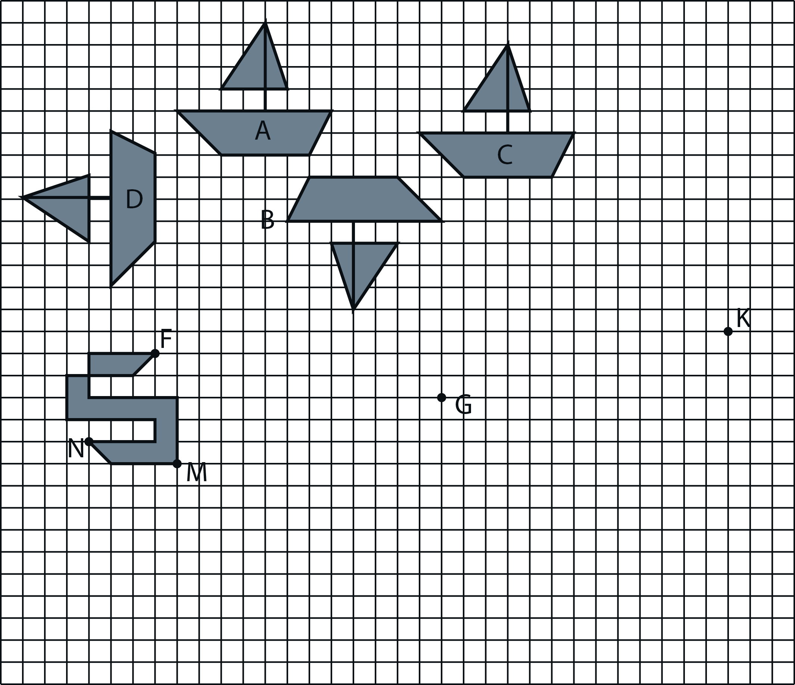
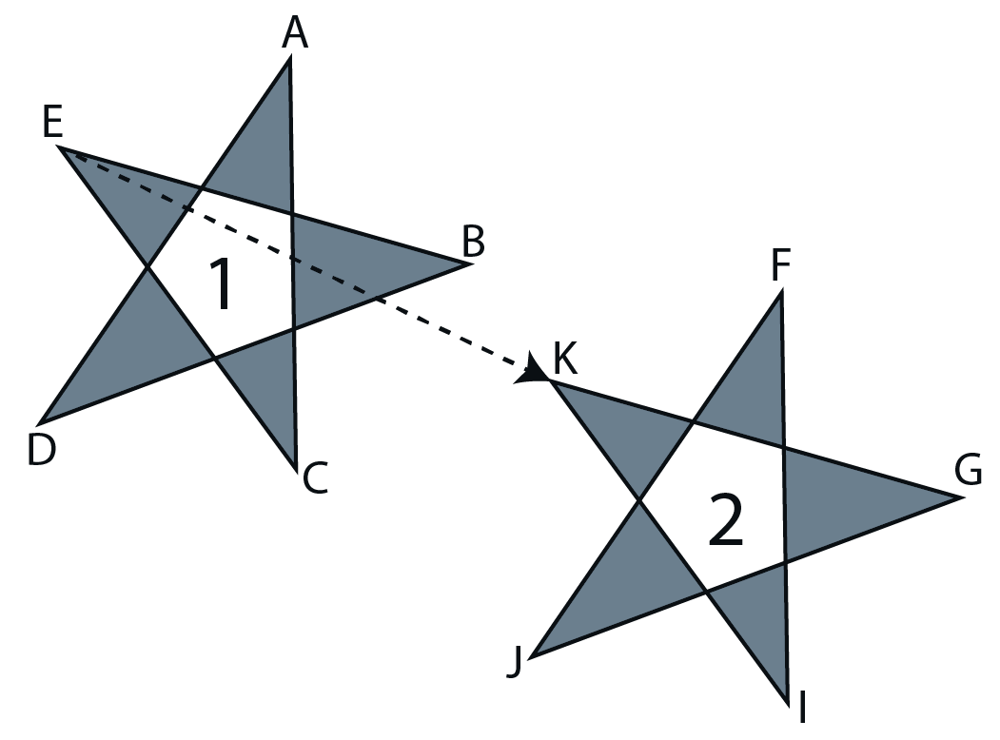
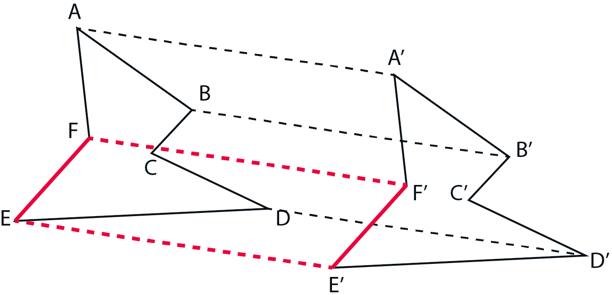
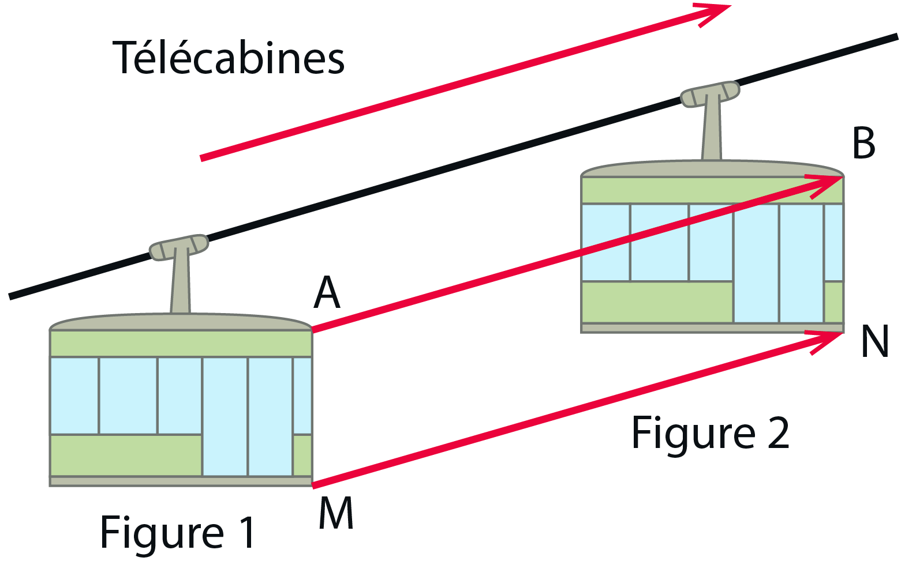

|
Chapitre 4
|
- Translations et pavages
|
Activité Introduction
- Observe bien les quatre bateaux A, B, C, D.
- Quel bateau a été obtenu en faisant glisser le bateau A ?
On dit que le bateau C est l’image de A par une translation.
- Trouve un synonyme de translation.
- Trace l’image de la figure 2 par la translation qui transforme F en G.
Place le point M’ image de M par la translation qui transforme F en G.
- Que peux-tu dire de FGM’M ?
Place le point N’ image de N par la translation qui transforme F en G.
- Que peux-tu dire de FGN’N ?
- Trace l’image de la figure 2 par la translation qui transforme F en K.
Place le point R image de M par la translation qui transforme F en K.
- Que peux-tu dire de FKRM ?
Place le point P image de N par la translation qui transforme F en K.
- Que peux-tu dire de FKPN ?


L’image ci-contre te montre deux étoiles.
L’étoile 2 est l’image de l’étoile 1 par la translation qui transforme E en K.
Recopie et complète les phrases suivantes :
L’image de A est .... et ........ est un parallélogramme.
L’image de B est .... et ........ est un parallélogramme.
L’image de C est .... et ........ est un parallélogramme.
Translation :
Définition :
Transformer un point ou une figure par translation c’est faire glisser ce point ou cette
figure selon une direction, un sens et une distance donnés.

Exemple :
Le polygone A’B’C’D’E’F’ est l’image du polygone ABCDEF par la translation qui transforme A en A’
Remarque :
- [AA’], [BB’], [CC’], [DD’], [EE’] et [FF’] sont parallèles.
- Le quadrilatère EE’F’F est un parallélogramme.
- Une translation conserve l’alignement, les longueurs, les angles et les aires. (Les figures sont superposables)

La figure 2 est l’image de la figure 1 par la translation qui transforme A en B, mais aussi M en N.
Construction :
Pour construire l'image d'un point par translation, on utilise le compas.
Il suffit de créer un parallèlogramme à partir du point de départ et des
deux points définissant la translation.

Pour construire l'image d'une figure plus complexe, on construit l'image de chacun de ses sommets comme précédement.
Pavages :
Un pavage est obtenu en remplissant le plan avec une figure donnée.
Pour effectuer un pavage par translation dans un plan à deux dimensions,
il faut définir deux translations non parallèles. On répète ensuite le déplacement
selon chaque translations pour couvrir toutes la surface.